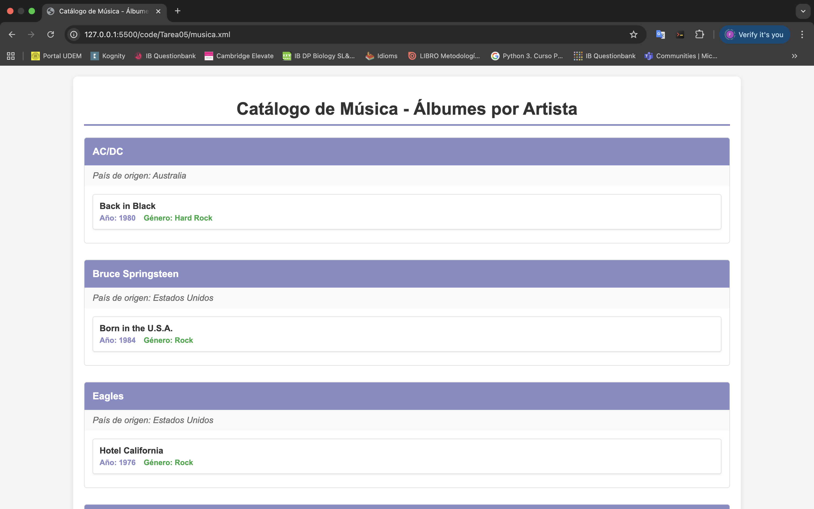
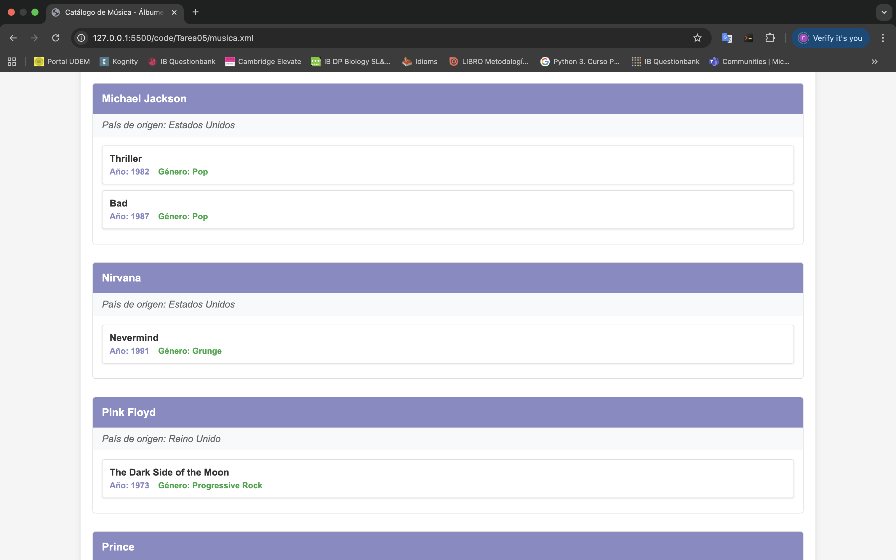
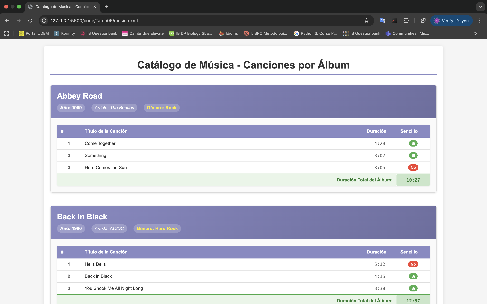
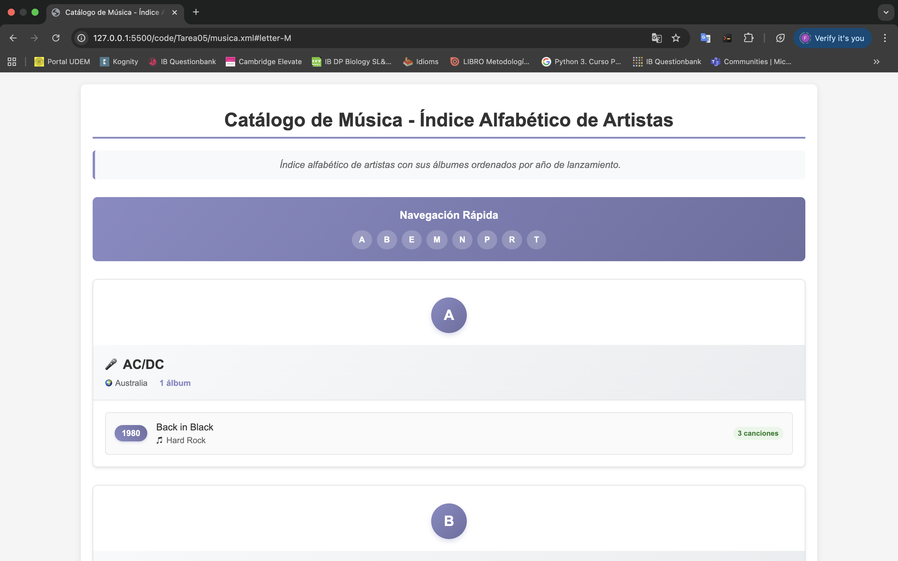
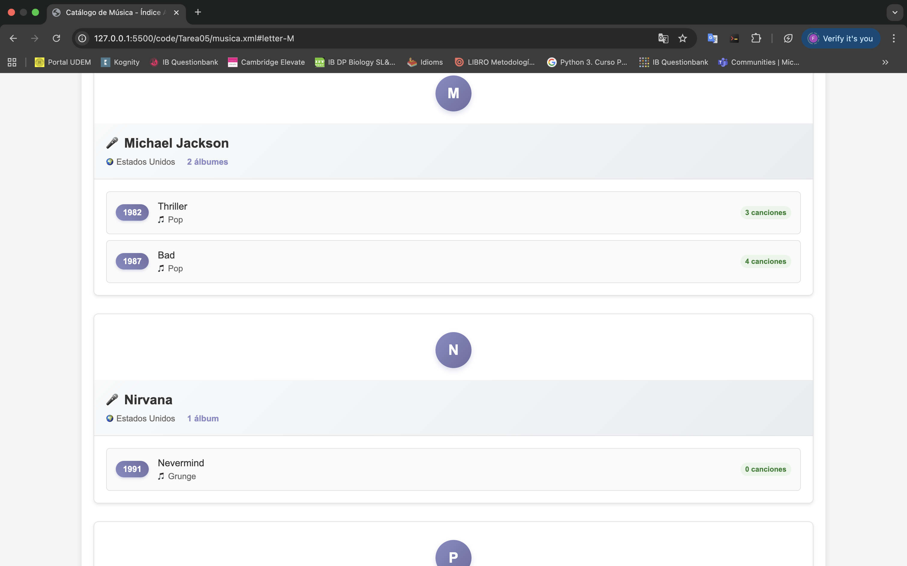
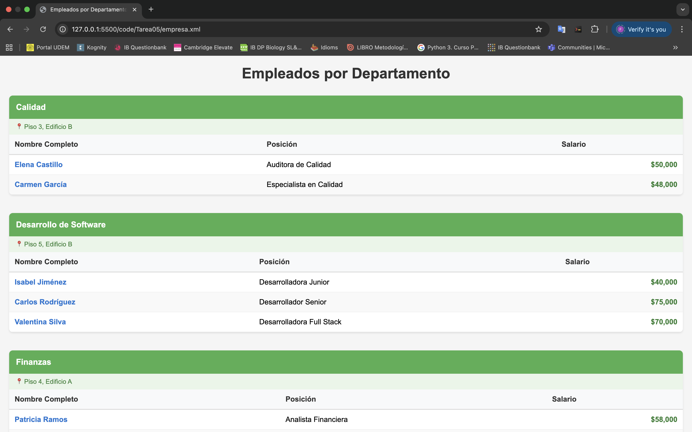
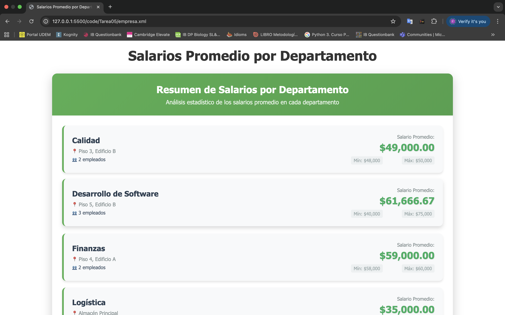
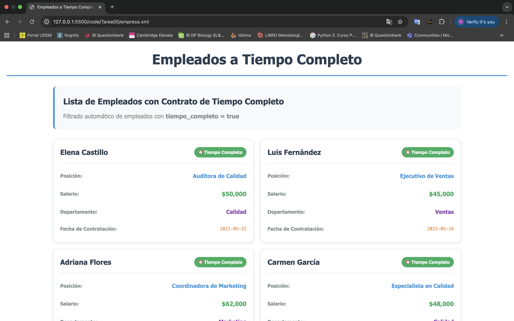
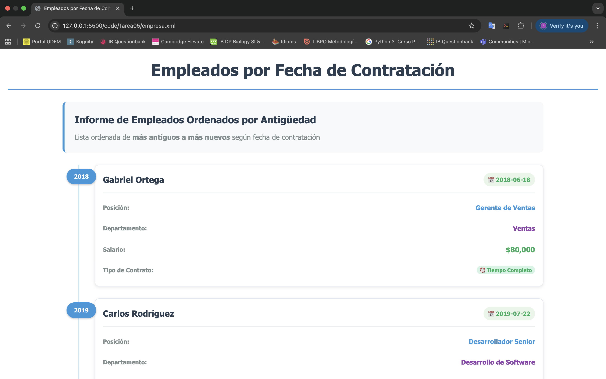
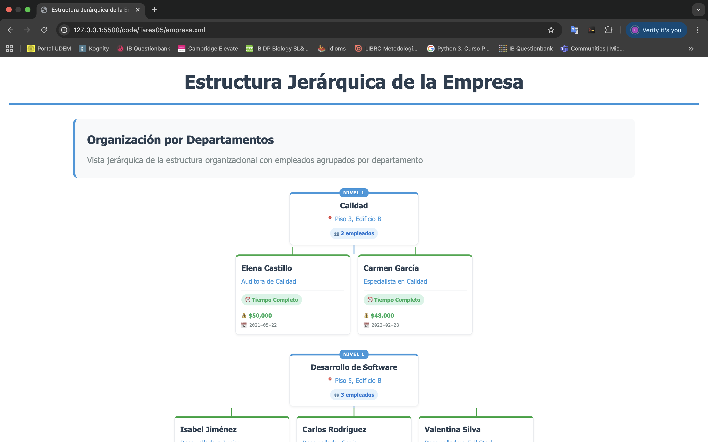

Instrucciones
Catálogo de Música
- Transformación de la lista de álbumes:
- Problema: Diseña un XSLT que transforme el XML de un catálogo de música en una página HTML que liste todos los álbumes, mostrando el título, año de lanzamiento, y género de cada uno. Agrupa los álbumes por artista y muestra el nombre y país de origen del artista antes de listar sus álbumes. Punto clave: Agrupación de elementos <album> por artista.
- Generación de una lista de canciones con duración total:
- Problema: Crea un XSLT que transforme el XML en una tabla HTML que muestre las canciones de cada álbum junto con su duración, e incluya al final la duración total del álbum. Punto clave: Sumar la duración de las canciones y mostrar el total en la salida HTML.
- Filtrado de canciones que son sencillos:
- Problema: Implementa un XSLT que filtre y muestre solo las canciones que son sencillos (single="true"). El resultado debe ser una lista de álbumes que incluya únicamente los sencillos, mostrando el título y la duración de cada uno. Punto clave: Uso de condiciones en XSLT (<xsl:if> o <xsl:choose>).
- Creación de un índice de artistas y sus álbumes:
- Problema: Diseña un XSLT que transforme el XML en una página HTML con un índice alfabético de artistas. Cada artista debe tener una lista de sus álbumes debajo de su nombre. Los álbumes deben estar ordenados por año de lanzamiento. Punto clave: Ordenar los álbumes por un atributo (year).
- Aplicación de un filtro por género musical:
- Problema: Crea un XSLT que permita filtrar los álbumes por género musical. El resultado debe ser una página HTML que muestre solo los álbumes pertenecientes a un género específico, como "Rock" o "Pop". Punto clave: Filtrado basado en el valor de un elemento (<genre>).
Registro de Empleados
- Transformación de la lista de empleados por departamento:
- Problema: Crea un XSLT que transforme el XML en una tabla HTML que agrupe a los empleados por departamento, mostrando para cada uno el nombre completo, posición, y salario. El departamento debe aparecer como un encabezado separado. Punto clave: Agrupación por el elemento <department>.
- Cálculo del salario promedio por departamento:
- Problema: Diseña un XSLT que calcule y muestre el salario promedio de los empleados en cada departamento. El resultado debe ser una lista de departamentos con el salario promedio mostrado al lado. Punto clave: Sumar y promediar valores numéricos en XSLT.
- Filtrado de empleados por tipo de contrato:
- Problema: Implementa un XSLT que filtre y muestre solo a los empleados que trabajan a tiempo completo. La salida debe ser una lista con el nombre completo, posición, y salario de cada empleado a tiempo completo. Punto clave: Uso de condiciones en XSLT (<xsl:if> o <xsl:choose>).
- Generación de un informe de antigüedad de empleados:
- Problema: Crea un XSLT que transforme el XML en un informe que muestre los empleados ordenados por fecha de contratación, de los más antiguos a los más nuevos. Incluye el nombre completo, posición, y fecha de contratación de cada empleado. Punto clave: Ordenar los empleados por un atributo (hire_date).
- Visualización jerárquica de departamentos y empleados:
- Problema: Diseña un XSLT que muestre una vista jerárquica de la estructura de la empresa, donde cada departamento es un encabezado y debajo se listan los empleados asociados, mostrando su nombre completo, posición, y si son a tiempo completo o parcial. Punto clave: Visualización jerárquica basada en la estructura de los datos XML.
Código
Screenshots
Catálogo de Música
1. Transformación de la lista de álbumes
1. Transformación de la lista de álbumes (Varios álbumes)
2. Generación de una lista de canciones con duración total
3. Filtrado de canciones que son sencillos
4. Creación de un índice de artistas y sus álbumes (Inicio)
4. Creación de un índice de artistas y sus álbumes (Por año)
5. Aplicación de un filtro por género musical
Registro de Empleados
1. Transformación de la lista de empleados por departamento
2. Cálculo del salario promedio por departamento
3. Filtrado de empleados por tipo de contrato
4. Generación de un informe de antigüedad de empleados
5. Visualización jerárquica de departamentos y empleados
Reflexión
Esta tarea es continuación de la tarea 4, en donde creé dos bases de datos: una de catálogo de libros y otra de registros de empleados. En aquella ocasión los datos se crearon en XML. Sin embargo, el enfoque de esta nueva actividad fue implementar XSLT, el cual nos permite manejar y transformar los datos de manera más flexible y dinámica.
Gracias a la variedad de los ejercicios, me pude dar cuenta de la amplia gama de opciones que existen para modificar, filtrar o crear nueva información a partir de un simple archivo XML. Por ejemplo, se pueden aplicar filtros de información para mostrar únicamente los datos que cumplen con cierto requisito, como en el caso de mostrar solo los álbumes de un género específico, como el rock. También se pueden realizar operaciones de agrupación, como organizar a los empleados según el departamento en el que trabajan. Asimismo, es posible generar nueva información al procesar los datos del XML, como calcular la duración total de un álbum sumando todas las canciones que lo componen.
Por estas razones, al igual que en la actividad anterior, encuentro una clara relación entre el uso de XML junto con XSLT y el manejo de datos en un sistema de gestión de bases de datos (SGBD). En ambos casos se pueden realizar acciones similares: filtrar, agrupar, crear nuevos datos mediante procesos, ordenar resultados, entre otras operaciones. Sin embargo, una de las ventajas clave del XSLT es que se puede combinar con CSS, lo que permite darle estilo a la información. Así, los datos no se muestran únicamente en forma de consultas de texto en una terminal, como ocurre en una base de datos tradicional, sino que se presentan de una manera más visual y atractiva para el usuario.
Además, después de realizar el ejercicio, me di cuenta de que realmente se podrían crear páginas completas para mostrar información de manera sencilla, incluso sin necesidad de tener una base de datos detrás si el proyecto es pequeño o si no se cuentan con los recursos suficientes (como tiempo o infraestructura). Me pareció muy interesante que el resultado de cada transformación se viera tan bien y que, con tan pocas herramientas, fuera posible lograr un front end básico directamente a partir de XML y XSLT. Esto me hizo valorar la importancia de estas tecnologías como soluciones prácticas y rápidas en determinados contextos.